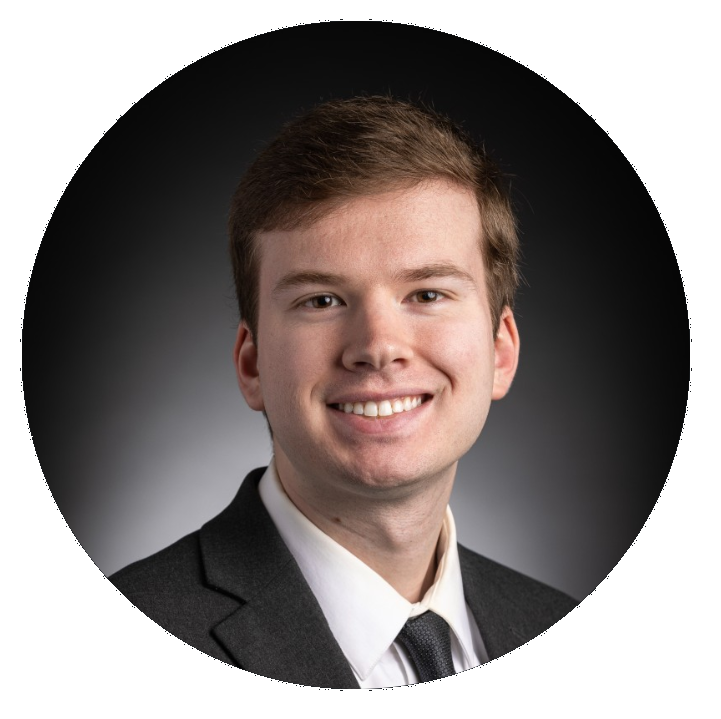

Ian Gotcher
Computer Science Student at Utah Valley University
IanGotcher75@Gmail.com
LinkedIn
About
Computer Science student at UVU with a passion for learning about software and technology.
I have a focus on achieving and maintaining exceptional academics while also developing real-world skills that are practical and in-demand.
Eager to connect with and learn from others and to have a software engineering internship to apply my skills and learning.
Skills
Python, C/C++, Git, SQL, HTML/CSS, Object-Oriented Design
Education
About
Utah Valley University, Orem, UT
Bachelor of Science, Computer Science
Anticipated Graduation May 2025
Cumulative GPA 3.92, Major GPA 3.96
Honors Program Student
UVU Presidential Academic Merit Scholarship - Highest tier of merit scholarship, awarded for exceptional high school GPA and ACT score.
UVU Dean's List - Awarded for high GPA, placed on list every semester attended thus far.
Relevant Courses: Object-oriented Programming, Python Software Development, C++ Programming, Web Programming, Algorithms and Data Structures, Software Engineering, Computer Organization and Architecture, Computer Networks, Operating Systems Theory
Computer Science Club member
Work History
Chubby’s Neighborhood Cafe, Pleasant Grove, UT - Cashier
September 2023 - Present
United States Postal Service, Lehi, UT - Rural Carrier Associate
May 2023 - July 2023
Walmart, Pleasant Grove, UT - Digital Personal Shopper
February 2022 - August 2022
The Church of Jesus Christ of Latter-day Saints, Lansing, MI - Full-time Missionary
February 2021 - December 2021
Arby's, Lindon, UT - Team Member
July 2018 - January 2021